워드프로세서-(구-1급) (2013-10-19 기출문제)
1과목: 워드프로세싱 일반
1. 다음 중 공문서의 종류에 대한 설명으로 옳지 않은 것은?
- 공고문서는 행정기관이 일정한 사항을 일반인에게 알리기 위한 문서로, 연도표시 일련번호를 사용한다.
- 법규문서는 헌법 ․ 법률 ․ 대통령령 ․ 총리령 ․ 부령 ․ 조례 ․ 규칙 등에 대한 문서로, 누년 일련번호를 사용한다.
- 지시 문서는 행정기관이 그 하급기관이나 소속 공무원에 대하여 일정한 사항을 지시하는 문서를 의미한다.
- 비치 문서는 민원인이 행정기관에 허가 ․ 인가 ․ 기타 ․ 처분 등 특정한 행위를 요구하는 문서나 그에 대한 처리 문서를 의미한다.
(정답률: 69%)

2. 전자출판을 출판물의 형태에 따라 분류했을 때 다음 중 일반적인 책 형태의 출판물을 나타내는 용어는 무엇인가?
- SBP(Screen Book Publishing)
- DTP(Desk Top Publishing)
- CTSP(Computerized Typesetting System Publishing)
- DBP(Disk Book Publishing)
(정답률: 53%)
3. 다음 중 공문서의 접수, 처리에 대한 설명으로 옳지 않은 것은?
- 접수한 문서에는 접수일시와 접수등록번호를 전자적으로 표시한다.
- 종이문서인 경우에는 행정안전부령으로 정하는 접수인을 찍고 접수일시와 접수등록번호를 적는다.
- 처리과에서 문서 수신·발신 업무를 담당하는 사람은 접수한 문서를 처리담당자에게 인계하고 다른 해당자나 필요한 자에게 공람한다.
- 문서는 처리과에서 접수하여야 한다.
(정답률: 46%)
4. 다음 중 워드프로세서의 입력 및 저장 관련 용어에 대한 설명으로 옳은 것은?
- 내어쓰기(Outdent) : 문단의 첫째줄 맨 앞부분을 문단의 다른 줄보다 몇 자 들어가게 하는 기능
- 개체(Object) : 문서를 작성하거나 편집할 때 편리하게 사용할 수 있도록 미리 제작된 이미지 데이터의 집합
- 캡처(Capture) : 현재 화면에 나타난 정보 그대로를 그래픽 파일로 디스크에 저장하는 것
- 강제 개행 : 한 행에 문자가 다 채워지면 커서가 자동으로 다음 행의 처음으로 이동하는 것
(정답률: 55%)
5. 다음 중 저장기능에 대한 설명으로 옳지 않은 것은?
- 저장된 파일 형태에 따라 확장자가 달라진다.
- 저장 기능은 주기억 장치에 있는 작성한 문서의 내용을 보조기억 장치에 저장하는 것이다.
- 서식 있는 문자열(*.rtf)로 저장 하면 다른 워드프로세서와 호환이 용이 하다.
- 자동 저장 파일(*.bak)은 모두 텍스트 파일로 저장 된다.
(정답률: 66%)
6. 다음 중 워드프로세서의 용어에 대한 설명이 옳은 것은?
- 래그드(Ragged) : 문서의 양쪽 끝이 정렬되지 않은 상태를 말한다.
- 홈베이스(Home Base) : 문서의 어디에서나 특별히 지정된 위치로 바로 이동하는 기능이다.
- 포스트 스크립트(Post Script) : 비트맵 글꼴을 말한다.
- 폼 피드(Form Feed) : 문서 내의 머리말, 꼬리말, 마진 등을 표시하기 위해 별도로 설정하는 공간을 의미한다.
(정답률: 55%)
7. 결재권자가 휴가, 출장, 기타의 사유로 결재할 수 없는 때에 그 직무를 대리하는 자가 결재하는 것은?
- 정규결재
- 대결
- 전결
- 후결
(정답률: 78%)
8. 다음 중 한자 입력 방법에 대한 설명으로 옳은 것은?
- 한자는 키보드에 표기할 수 없기 때문에 한자 목록이나 한자 사전에서 해당 한자를 선택하여 입력한다.
- 한자의 음을 모를 경우 한글/한자 음절변환, 단어 변환, 문장 자동 변환 등으로 입력할 수 있다.
- 한자의 음을 알면 부수/총회수 입력, 외자 입력, 2Stroke 입력 등으로 변환해야 한다.
- 한자가 많이 들어있는 문서의 일부분은 블록 지정하여 모두 한글로 바꿀 수 있지만, 문서 전체는 블록 지정하여 모두 한글로 바꿀 수 없다.
(정답률: 51%)
9. 다음 중 인쇄용지에 대한 설명으로 옳지 않은 것은?
- 낱장 용지는 주로 잉크젯프린터나 레이저 프린터에서 사용한다.
- 연속 용지는 주로 도트 프린터나 라인 프린터에서 사용된다.
- 낱장용지는 A판, B판으로 나뉘며 A0에서 A3, B0에서 B3까지 구분한다.
- 낱장 용지는 같은 번호일 때 A판이 B판보다 더 작다.
(정답률: 74%)
10. 다음 중 고속의 CPU와 저속의 프린터 장치의 속도차이를 극복하기 위한 기법으로 인쇄를 하면서 동시에 다른 작업이 가능한 기능은?
- 스풀링(Spooling)
- 프린터드라이버(Printer Driver)
- 레이아웃(Layout)
- 소프트카피(Soft Copy)
(정답률: 73%)
11. 다음 보기에서 설명하는 전자출판 기술은 무엇인가?
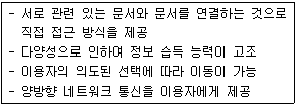
- EDI(Electronic Data Interchange)
- 위지윅(WYSIWYG)
- OLE(Object Linking and Embedding)
- 하이퍼링크(Hyperlink)
(정답률: 60%)
12. 다음 중 치환(Replace) 기능에 대한 설명으로 옳지 않은 것은?
- 한글, 특수 문자, 영어, 한자 등을 바꿀 수 있다.
- 문서에서 특정 단어를 검색하여 다른 단어로 바꾸는 것을 의미한다.
- 단어는 바꿀 수 있어도 글꼴의 크기, 모양, 속성은 바꿀 수 없다.
- 문서에서 원하는 부분을 블록으로 설정하면 설정된 부분에 대해서만 바꾸기를 할 수 있다.
(정답률: 72%)
13. 다음 중 탭(Tab)의 기능에 대한 설명으로 옳지 않은 것은?
- 일정한 간격으로 커서를 이동할 때 사용한다.
- 탭의 추가는 가능하나 지우기는 할 수 없다.
- 각 줄의 시작 부분 등을 균등하게 맞출 때 유용하다.
- 오른쪽 탭은 설정된 탭 위치에 있는 낱말의 오른쪽 끝부분을 가지런하게 맞추는 기능이다.
(정답률: 66%)
14. 다음 보기에서 설명하는 전자출판 관련 용어로 옳은 것은?
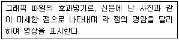
- 하프톤(Halftone)
- 오버프린트(Over Print)
- 리딩(Leading)
- 텍스트 흘리기(Text Runaround)
(정답률: 61%)
15. 다음 중 입력장치에 대한 설명으로 옳지 않은 것은?
- 터치스크린(Touch Screen)은 손끝이나 전자펜 등의 접촉을 통해 입력하는 장치이다.
- 스캐너(Scanner)는 그림이나 사진 등에 영상정보를 입력할 수 있도록 하는 장치이다.
- 트랙볼(Trackball)은 표면에 있는 볼을 손으로 회전하면서, 회전 방향이나 빠르기에 따라 커서를 제어하는 것을 말한다.
- 플로터(Plotter)는 그래프나 도형, CAD, 도면 등을 입력하기 위한 대형 입력장치이다.
(정답률: 45%)
16. 다음 중 워드프로세서의 특징 및 장점에 대한 설명으로 가장 옳지 않은 것은?
- 문서의 보관 및 자료 검색이 용이하다.
- 문서 편집 기능을 가진 하드웨어로서 단어 처리기라고도 한다.
- 문서의 통일성과 체계를 갖출 수 있다.
- 동일한 문서를 여러 번 작성할 필요가 없다.
(정답률: 66%)
17. 다음 보기는 워드프로세서의 화면 표시 기능 중 무엇에 대한 설명인가?
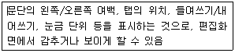
- 눈금자(Ruler)
- 상태 표시줄(Status Line)
- 스크롤 바(Scroll Bar)
- 격자(Grid)
(정답률: 69%)
18. 다음 중 워드프로세서에서 사용하는 문단에 대한 설명으로 옳지 않은 것은?
- 문단의 시작부분은 들여쓰기나 내어쓰기를 할 수 있다.
- 문단의 가운데 정렬이란 글자를 가운데로 모으는 정렬 방식이다.
- 한 행의 내용이 다 채워지지 않으면 커서는 다음행으로 절대 이동할 수 없다.
- 문단 정렬은 별도의 영역지정 없이도 가능하다.
(정답률: 80%)
19. 다음 중 문서의 분량이 감소할 가능성이 있는 교정부호들로만 올바르게 짝지어진 것은?
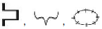
(정답률: 78%)
20. 다음 중 (보기 1)의 문장이 (보기 2)의 문장으로 수정되기 위해 필요한 교정 부호들이 순서에 맞게 바르게 짝지어진 것은
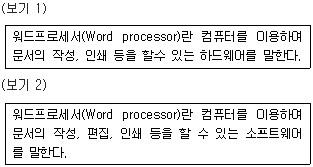
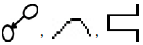
(정답률: 63%)
2과목: PC 운영 체제
21. 다음 중 현재 실행 중인 프로그램을 종료하는 방법으로 옳지 않은 것은?
- <Ctrl> + <Shift> + <Esc> 키를 누른 후 나타나는 Windows 작업 관리자 창의 [응용 프로그램] 탭에서 해당 프로그램을 선택한 후 [작업 끝내기] 단추를 클릭한다.
- 작업 표시줄의 바로 가기 메뉴에서 [작업 관리자]를 선택한 후 [프로세스] 탭에서 해당 프로그램의 이미지 이름을 선택한 후 [프로세스 끝내기] 단추를 클릭한다.
- <Alt> + <F4> 키를 누른다.
- [시작] 메뉴에서 [로그오프]를 누르면 나타나는 대화상자에서 닫기 단추를 클릭한다.
(정답률: 55%)
22. 한글 Windows XP에서 다음 보기의 설명과 가장 관계있는 메뉴는 무엇인가?
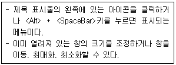
- 주 메뉴
- 창 조절 메뉴
- 바로 가기 메뉴
- 부 메뉴
(정답률: 70%)
23. 다음 중 한글 Windows XP를 부팅할 때 <F8> 키를 눌러서 표시되는 [Windows 고급 옵션] 화면에서 [안전 모드] 방식의 부팅 방법에 관한 설명으로 옳은 것은?
- 컴퓨터가 비정상적으로 작동될 때 컴퓨터에 발생한 문제를 해결하기 위하여 사용하는 방식으로 네트워크를 사용할 수 없다.
- 네트워크가 연결된 경우에 컴퓨터 관리자에게 해당 컴퓨터의 디버그 정보를 보내면서 부팅하는 방식이다.
- 마지막으로 시스템이 문제없이 실행되고 종료되었을 때 레지스트리 정보와 드라이버를 사용하여 부팅하는 방식이다.
- 시스템의 안전을 위하여 다중 부팅 선택 화면을 이용하여 부팅하는 방식이다.
(정답률: 50%)
24. 다음 중 한글 Windows XP에서 내 컴퓨터 창에 대한 설명으로 옳지 않은 것은?
- [폴더 옵션] 창의 [보기] 탭에서 ‘알려진 파일 형식의 파일 확장명 숨기기’ 항목의 체크 표시를 해제하면 파일의 확장명을 표시할 수 있다.
- 프로그램 추가/제거를 실행하여 불필요한 프로그램을 제거할 수 있다.
- 한글 Windows XP가 설치된 하드디스크인 (C:) 드라이브를 포맷하거나 제거할 수 있다.
- 내 네트워크 환경을 실행하여 네트워크 상에서 같은 작업 그룹에 있는 컴퓨터의 목록을 볼 수 있다.
(정답률: 45%)
25. 다음 중 한글 Windows XP에서 바로 가기 메뉴에 관한 설명으로 옳지 않은 것은?
- 바로 가기 메뉴는 객체를 선택한 후에 마우스의 오른쪽 단추를 클릭하면 나타나는 메뉴이다.
- 바로 가기 메뉴에 있는 각 메뉴 항목은 하위 메뉴 항목이 있는 경우도 있다.
- 바로 가기 메뉴는 선택된 객체에 따라 메뉴 항목이 다르게 나타난다.
- 선택된 항목의 바로 가기 메뉴를 표시하기 위한 바로 가기 키는 <Ctrl> + <Enter> 키 이다.
(정답률: 55%)
26. 한글 Windows XP에서 작업 표시줄의 바로 가기 메뉴 중 [도구 모음]에 대한 설명으로 옳지 않은 것은?
- 바탕 화면 : 현재 바탕 화면에 존재하는 아이콘 표시
- 빠른 실행 : 클릭만으로 빠르게 실행할 수 있는 아이콘 표시
- 입력 도구 모음 : 한/영 전환, 한자 변환, 확장 입력기 등의 도구 모음 표시
- 연결 : 인터넷 주소를 입력할 수 있는 주소 표시줄 표시
(정답률: 49%)
27. 다음 중 한글 Windows XP에서 Windows 구성 요소를 추가 하거나 삭제하는 기능에 대한 설명으로 옳은 것은?
- 관리자 계정으로 로그온하면 Windows 구성 요소를 추가하여 설치할 수 있다.
- Windows 구성 요소를 구성하지 않고 설치하면 삭제한 후 다시 설치하여야 한다.
- Windows 구성 요소를 추가하거나 삭제하려면 프로그램 추가/제거 창에서 프로그램 변경/제거 항목을 선택하여야 한다.
- Guest 계정으로 로그온하면 설치되어 있는 Windows 구성 요소를 제거할 수 있다.
(정답률: 42%)
28. 다음 중 한글 Windows XP에서 새로운 하드웨어 추가와 관련된 설명으로 옳은 것은?
- 새로운 하드웨어를 추가하려면 [제어판]에 있는 [자동 업데이트]를 선택하여 지시 사항대로 설정하면 된다.
- 장치 드라이버가 없는 새로운 하드웨어의 설치는 [하드웨어 추가 마법사]에서 자동적으로 이루어진다.
- 자동으로 인식하지 못하는 하드웨어는 제어판의 [새 하드웨어 추가]를 이용하여 설치한다.
- 새로운 하드웨어를 추가하려면 시스템 등록 정보대화 상자에서 시스템 복원을 이용하여 설치한다.
(정답률: 46%)
29. 다음 중 한글 Windows XP에서 마우스를 이용하여 파일이나 폴더를 복사 또는 이동하는 방법으로 옳지 않은 것은?
- 파일을 같은 드라이브에 있는 다른 폴더로 이동할 경우에는 파일을 선택한 후 드래그 앤 드롭한다.
- 파일을 같은 드라이브에 있는 다른 폴더로 복사할 경우에는 파일을 선택한 후 <Alt> 키를 누른 상태로 드래그 앤 드롭한다.
- 파일을 다른 드라이브에 있는 폴더로 이동할 경우 에는 파일을 선택한 후 <Shift> 키를 누른 상태로 드래그 앤 드롭한다.
- 파일을 다른 드라이브에 있는 폴더로 복사할 경우에는 파일을 선택한 후 드래그 앤 드롭한다.
(정답률: 50%)
30. 다음 중 한글 Windows XP에서 [사용자 계정]과 관련하여 [제한된 계정]을 가진 사용자가 수행할 수 있는 작업에 대한 설명으로 옳지 않은 것은?
- 현재 사용자 암호를 변경 및 제거할 수 있다.
- 현재 사용자가 만든 파일이나 공유 문서 폴더의 파일을 확인할 수 있다.
- 다른 사용자의 암호를 변경하거나 제거할 수 없다.
- 현재 사용자가 사용할 프로그램을 설치할 수 있다.
(정답률: 36%)
31. 다음 중 한글 Windows XP의 [Windows 보안 센터]에서 권한이 없는 사용자가 네트워크나 인터넷을 통해 사용자의 컴퓨터에 접근하지 못하도록 설정할 수 있는 것은 무엇인가?
- 네트워크 연결
- 자동 업데이트
- 방화벽
- 바이러스 백신
(정답률: 73%)
32. 다음 중 한글 Windows XP에서 [시작] 메뉴에 있는 [검색]-[모든 파일 및 폴더]의 고급 옵션 선택항목이 아닌것은 무엇인가?
- 시스템 폴더 검색
- 삭제된 파일 및 폴더 검색
- 하위 폴더 검색
- 대/소문자 구분
(정답률: 50%)
33. 다음 중 한글 Windows XP에서 [Windows 탐색기]창에 대한 설명으로 옳지 않은 것은
- 폴더 창에서 폴더를 선택한 후 <Backspace>키를 누르면 상위 폴더가 선택된다.
- 키보드의 영문자를 누르면 해당 영문자로 시작하는 폴더 중 마지막 폴더로 이동한다.
- Windows 탐색기는 컴퓨터의 파일과 폴더를 계층(트리)구조로 표시한다.
- 상태표시줄에는 폴더 내의 총 개체수, 디스크 여유 공간, 선택된 파일의 크기 등이 표시된다.
(정답률: 50%)
34. 다음 중 한글 Windows XP에서 문서 인쇄에 대한 설명으로 옳지 않은 것은?
- [프린터] 메뉴 중 [모든 문서 취소]는 스풀러에 저장되어 있는 문서 중 오류가 발생한 문서에 대해서만 인쇄 작업을 취소한다.
- 일단 프린터에서 인쇄 작업이 시작된 경우라도 잠시 중지 시켰다가 다시 인쇄할 수 있다.
- 인쇄 대기중인 문서를 삭제하거나 출력 대기 순서를 임의로 조정할 수 있다.
- 인쇄중 문제가 발생한 인쇄목록을 확인할 수 있다.
(정답률: 57%)
35. 다음 중 한글 Windows XP의 [보조프로그램]에 있는 [계산기] 프로그램에 관한 설명으로 옳지 않은 것은?
- 자릿수 구분 단위를 사용할 수 있다.
- [일반용]과 [공학용] 보기를 사용할 수 있다.
- 2차 방정식을 직접 입력하여 계산할 수 있다.
- 2진수, 8진수, 10진수, 16진수를 사용할 수 있다.
(정답률: 47%)
36. 다음 중 한글 Windows XP의 [보조프로그램]에 있는 [그림판]에 관한 설명으로 올바르지 않은 것은?
- 기본형식은 BMP이며 JPG, PCX, GIF 등의 형식을 편집할 수 있다.
- OLE 기능을 지원하므로 다른 응용프로그램과 연결이 가능하다.
- [시작] - [모든 프로그램] - [보조프로그램] - [그림판]을 선택한다.
- <Ctrl> 키를 이용하면 정사각형, 정원, 수평선/수직선 등을 그릴 수 있다.
(정답률: 42%)
37. 다음 중 한글 Windows XP에서 [무선 네트워크 설정 마법사]를 설정하는 과정에서 수행할 수 있는 작업으로 옳지 않은 것은?
- 파일 및 프린터 공유
- 무선 홈네트워크 설정
- Windows 방화벽 설정
- 네트워크 드라이브 연결 설정
(정답률: 26%)
38. 다음 중 고유한 IP 주소 없이 인터넷에 접속할 때 자동으로 새로운 IP 주소를 할당해 주는 것을 무엇이라 하는가?
- NetBEUI
- ISP
- DNS
- DHCP
(정답률: 38%)
39. 다음 중 한글 Windows XP에서 폴더와 프린터의 공유에 대한 설명으로 옳은 것은
- 폴더, 파일, 프린터에는 설정할 수 있지만 드라이브, 모뎀, 사운드 카드에는 설정할 수 없다.
- 다른 컴퓨터에 있는 파일이나 폴더를 복사할 때 바이러스에 감염될 위험은 없다.
- 다른 사람이 공유 여부를 모르게 하려면 폴더나 드라이브의 공유이름 뒤에 ‘$’를 표시하면 된다.
- 공유된 자원의 아이콘에는 오른쪽 하단에 그림()과 같이 체크 표시가 나타난다.
(정답률: 47%)
40. 다음 중 디스크 공간 부족을 해결하기 위한 방법으로 올바르지 않은 것은
- 불필요한 파일과 사용하지 않는 Windows 구성 요소를 제거한다.
- [시작]-[모든 프로그램]-[시작프로그램]에 설정된 불필요한 프로그램을 삭제한 후 시스템을 재시작한다.
- 휴지통에 있는 파일을 삭제한다.
- 디스크 정리를 통해 오래된 압축 파일이나 임시 인터넷 파일 등을 삭제한다.
(정답률: 49%)
3과목: 컴퓨터 및 정보활용
41. 다음 중 파일 표준 형식에 대한 설명으로 옳지 않은 것은?
- MOV : 정지 영상을 표현하는 국제 표준 파일 형식으로 JPEG를 기본으로 한다.
- MPEG : 프레임 간의 연관성을 고려하여 중복 데이터를 제거해 압축률을 높이는 손실 압축 기법을 사용한다.
- ASF : 인터넷을 통해 오디오, 비디오 및 생방송 수신 등을 지원하는 스트리밍을 위한 표준 기술 규격이다.
- AVI : 윈도의 표준 동영상 파일 형식으로 별도의 장치 없이 재생할 수 있다.
(정답률: 51%)
42. 다음 중 원격 간에 서로 영상을 보면서 회의를 가능하게 하는 시스템은?
- VOD(Video On Demand)
- VR(Virtual Reality)
- VCS(Video Conferencing System)
- CAI(Computer Aided Instruction)
(정답률: 67%)
43. 다음 중 오디오, 비디오 등 아날로그 신호를 PCM을 사용하여 디지털 비트 스트림으로 압축․변환하고, 역으로 수신측에서 디지털 신호를 아날로그 신호로 변환하는 장치는?
- CODEC
- VDT
- PACS
- Indio
(정답률: 49%)
44. 다음 바이러스의 유형 중 사용자 디스크에 숨어 있다가 날짜와 시간, 파일의 변경, 사용자나 프로그램의 특정한 행동 등의 일정 조건을 만족하면 실행되는 것은?
- 폭탄(Bomb) 바이러스
- 은닉(Stealth) 바이러스
- 부트(Boot) 바이러스
- 클러스터(Cluster) 바이러스
(정답률: 43%)
45. 다음은 인터넷에서 메시지를 전송하는 데 사용되는 프로토콜과 그 역할에 대한 설명이다. ( )안에 들어갈 용어를 순서대로 올바르게 나열한 것은?
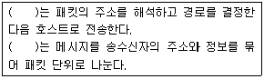
- TCP, IP
- IP, HTTP
- IP, TCP
- TCP, HTTP
(정답률: 42%)
46. 다음 중 서로 인접한 노드끼리 둥글게 연결된 형태로 양방향 전송이 가능하고, LAN에서 가장 많이 이용하는 정보통신망의 유형은?
- 버스(Bus)형
- 링(Ring)형
- 트리(Tree)형
- 스타(Star)형
(정답률: 70%)
47. 다음 중 프로그램 내장 방식에 대한 설명으로 옳지 않은 것은?
- 폰 노이만에 의해서 제안되었다.
- 프로그램과 데이터를 주기억장치에 저장하여 수행 한다.
- 서브루틴의 사용이 가능하며 사용 빈도에 제한이 없다.
- UNIVAC은 프로그램 내장방식을 채택한 최초의 컴퓨터이다.
(정답률: 50%)
48. 다음 중 인터넷 주소 체계에 대한 설명으로 옳지 않은 것은?
- IP 주소는 네트워크 부분의 길이에 따라 A클래스에서 E클래스까지 5단계로 구성되어 있다.
- IPV4는 숫자로 8비트씩 4부분으로 총 32비트로 구성된다.
- IPV4는 8비트마다 0에서 255 사이의 10진수로 표시하며 각각을 점(.)으로 구분한다.
- IPV6은 IPV4의 주소 부족을 해결하기 위한 대책으로 마련된 64비트 체계이다.
(정답률: 49%)
49. 다음 중 데이터 전송에 대한 설명으로 옳지 않은 것은?
- 반이중 통신은 무전기와 같이 양쪽방향으로 전송이 가능하지만 동시에 양쪽방향으로 전송은 불가능하다.
- 직렬 전송은 모든 비트들이 동일한 전송선을 사용하기 때문에 병렬전송보다 오류 발생이 적으며 원거리 전송에 적합하다.
- 비동기식 전송은 미리 정해진 수만큼의 문자열을 한 묶음으로 만들어서 일시에 전송하는 방식이다.
- 전이중 통신은 전화나 비디오텍스 등과 같이 동시에 양쪽 방향에서 전송이 가능한 방식이다.
(정답률: 41%)
50. 다음 중 보안 요건을 위협하는 형태에 대한 설명으로 옳은 것은?
- 트로이 목마(Trojan Horse) : 정상적인 기능을 하는 프로그램으로 가장하여 프로그램 내에 숨어 있다가 해당 프로그램이 동작할 때 활성화되어 부작용을 일으키는 것이다.
- 웜(Worm) : 서비스 기술자들의 액세스 편의를 위해 만든 보안이 제거된 비밀통로를 이르는 말로, 시스템에 무단 접근하기 위한 일종의 비상구로 사용된다.
- 백도어(Back Door) : 어떤 프로그램이 정상적으로 실행되는 것처럼 속임수를 사용하는 행위이다.
- 드롭퍼(Dropper) : 실제로는 악성 코드로 행동하지 않으면서 겉으로는 악성 코드인 것처럼 가장하여 행동하는 소프트웨어이다.
(정답률: 59%)
51. 다음 중 주기억 장치에 대한 설명으로 옳은 것은
- 현재 가장 많이 사용하는 주기억 장치는 SSD(Solid State Drive)이다.
- EEPROM은 BIOS, 글꼴, POST 등이 저장된 대표적인 펌웨어(Firmware) 장치이다.
- SDRAM은 전원이 공급되지 않아도 지워지지 않는 비휘발성 메모리이다.
- RDRAM은 가장 속도가 빠른 기억 장치이다.
(정답률: 50%)
52. 다음 보기에서 4세대 컴퓨터의 주요 특징으로만 짝지은 것은?
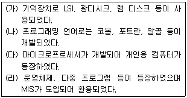
- (가),(나)
- (다),(라)
- (나),(다)
- (가),(다)
(정답률: 42%)
53. 다음 중 중앙처리장치의 연산장치에 해당되는 구성 요소로만 바르게 연결된 것은?
- 누산기, 부호기, 프로그램 카운터
- 명령 해독기, 인덱스 레지스터, 보수기
- 부호기, 상태 레지스터, 명령 레지스터
- 누산기, 가산기, 상태 레지스터
(정답률: 52%)
54. 다음 보기는 무엇에 대한 설명인가?
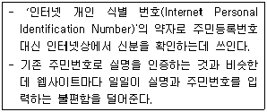
- 전자서명
- 아이핀(i-PIN)
- 공인인증서
- 회원가입
(정답률: 70%)
55. 다음 중 운영체제와 관련된 설명으로 옳지 않은 것은?
- 데이터 관리 프로그램은 데이터나 파일의 표준적인 관리 및 전송을 관리한다.
- 사용자가 일을 시스템에 의뢰하고 나서 그 결과를 얻을 때까지 걸린 시간을 응답 시간이라 한다.
- 언어번역 프로그램에는 컴파일러, 인터프리터, 어셈블러 등이 있다.
- 실행 가능한 프로그램이나 파일을 주기억 장치로 이동시키는 프로그램을 링커(Linker)라고 한다.
(정답률: 54%)
56. 다음 중 용어의 설명이 바르지 못한 것은?
- 시분할 시스템(Time Sharing System) : 컴퓨터의 처리 시간을 짧은 시간 단위로 분할하여 한 대의 컴퓨터를 여러 명이 동시에 사용할 수 있게 하는 방식
- 실시간 처리 시스템(Real Time System) : 자료가 발생하는 즉시 처리하는 방식
- 멀티프로그래밍(Multi-Programming) : 한 대의 컴퓨터에 2대 이상의 CPU를 설치하여 대량의 데이터를 신속하게 처리하는 방식
- 분산 처리 시스템(Distribute Processing System) : 지역적으로 분산된 여러 대의 컴퓨터 시스템을 연결하여 업무를 지역적 또는 기능적으로 분산시켜 처리하는 방식
(정답률: 56%)
57. 다음은 프로그래밍 개발 절차이다. ( ) 안에 들어갈 내용을 순서대로 바르게 나열한 것은?
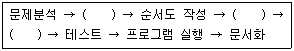
- 코딩, 입출력 설계, 번역과 오류 수정
- 입출력 설계, 번역과 오류 수정, 코딩
- 입출력 설계, 코딩, 번역과 오류 수정
- 번역과 오류 수정, 코딩, 입출력 설계
(정답률: 58%)
58. 다음 보기의 내용은 무엇에 대한 설명인가?
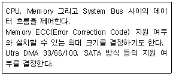
- 칩셋(Chip Set)
- SCSI 카드
- PCMCIA 카드
- AGP
(정답률: 49%)
59. 다음 중 PC의 하드웨어를 업그레이드 할 때 고려하여야 할 사항으로 옳지 않은 것은
- RAM은 용량이 크고 빠를수록 좋으며 메인보드와 운영체제의 지원여부에 따라 교체하여야 한다.
- 하드디스크인 경우 용량과 RPM은 클수록 좋고 전송 속도의 MB/S는 작을수록 좋다.
- CPU를 펜티엄Ⅳ에서 코어i5-3세대로 업그레이드 하려면 메인보드도 교체하여야 한다.
- DVD-Writer인 경우 속도 단위인 배속의 숫자가 클수록 좋다.
(정답률: 46%)
60. 다음 중 인터넷 프로그래밍 언어인 자바(JAVA)에 대한 설명으로 옳지 않은 것은
- 3차원 가상공간과 입체 이미지들을 묘사하기 위한 언어이다.
- 자체 통신기능을 가지며 다양한 응용 프로그램을 만들 수 있다.
- 실시간 정보를 통해 애니메이션을 구현한다.
- 분산 네트워크상에서의 프로그램 작성이 용이하다.
(정답률: 34%)